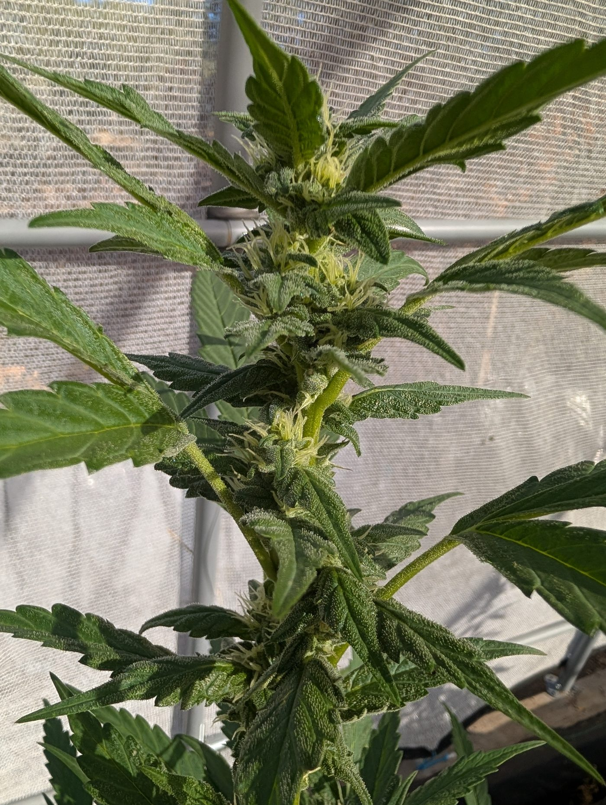

Before you start
Grow her well and she fills out. Skill brings the weight.
Give her room, light, and a little neglect.
Flower: roughly 9–10 weeks. Height: medium, some stretch.
Seedling
Soak overnight. Paper towel. Warm and dark.
Tail shows in 2–4 days. Plant it shallow, root down.
Water in a ring, not on top of her.

Veg
Wants to dry back between waterings. Lift the pot. Learn the weight.
Top once. Maybe twice. She'll fill out low and wide.
Go easy on nitrogen. Pale lime is fine. Clawing is not.
Flower
Week three, rub a stem. Pepper first.
Week six, the honey arrives.
Cool nights near the end pull out amber. Don't rush her.
Harvest & cure
Cut when the smell turns deep, not loud.
Hang slow. Cool room. Ten days, give or take.
Jar it and wait three weeks. That's where the flavor I bred for lives.
A last note
Visit her daily. Even when there's nothing to do.
Especially then.